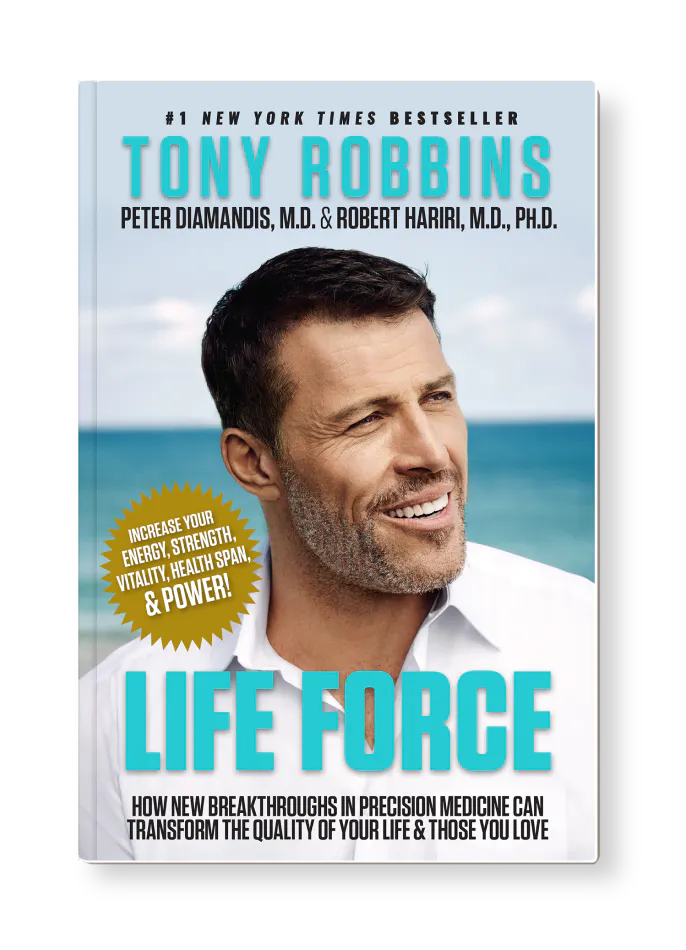

Welcome to the Took-Book!
Здесь вы можете найти книги на любой вкус и цвет! На этой
странице вы найдете новости из мира книг, а
каталог вы можете посмотреть ->ТУТ<-..
Подробнее о нашей компании можно почитать в разделе О нас
Популярный автор Тони Роббинс
выпустил новую книжку.
Что, если бы существовали научные решения, которые могли бы избавить вас от самых глубоких страхов заболеть, получить опасный для жизни диагноз или почувствовать последствия старения? Что, если бы у вас был доступ к тем же самым передовым инструментам и технологиям, которые используют лучшие исполнители и величайшие спортсмены мира?В мире, полном страха и неуверенности в нашем здоровье, может быть трудно понять, к кому обратиться за практическим советом, которому вы можете доверять.
Сегодня ведущие ученые и врачи в области регенеративной медицины разрабатывают диагностические инструменты и безопасные и эффективные методы лечения, которые могут избавить вас от страха.
В этой книге Тони Роббинс, стратег номер один в области жизни и бизнеса в мире, который обучил более
пятидесяти миллионов человек, рассказывает о более чем 100 лучших медицинских умах мира и новейших
исследованиях, вдохновляющих историях о возвращении и удивительных достижениях в области точной
медицины, которые вы можете применить сегодня, чтобы помочь продлить продолжительность и качество вашей
жизни.
P.S. К сожалению на данный момент у книжки нет перевода на русский язык и она недоступна
в
нашем магазине.
Почему важно читать книги?
Чтение книг является важным аспектом нашей жизни, который помогает развивать наши умственные способности и обогащать наш внутренний мир. В этой статье мы рассмотрим несколько причин, почему важно читать книги.
1. Развитие креативности и воображения. Чтение книг позволяет нам воображать миры и переживать приключения, которые могут быть недоступны в реальной жизни. Кроме того, чтение способствует развитию нашей креативности, что может быть полезно не только в искусстве и литературе, но и в других сферах жизни.
2. Расширение кругозора. Чтение книг помогает нам узнавать о различных темах и областях, которые мы можем не встретить в повседневной жизни. Это позволяет нам лучше понимать мир вокруг нас и нашу роль в нем.
3. Улучшение умственных способностей. Чтение книг способствует развитию наших умственных способностей, включая память, концентрацию и внимание. Кроме того, частое чтение может улучшить нашу грамотность и орфографию.
4. Уменьшение стресса. Чтение книг может помочь нам расслабиться и снизить уровень стресса. Это может быть особенно полезно для людей, которые сталкиваются с высоким уровнем стресса в повседневной жизни.
5. Повышение эмпатии. Чтение книг может помочь нам лучше понимать и сочувствовать другим людям, что может быть полезно для нашей эмпатии и социальной компетенции.
В заключение, чтение книг является важным аспектом нашей жизни, который может помочь нам развивать наши умственные способности, расширять наш кругозор и уменьшать уровень стресса. Независимо от того, какие книги вы предпочитаете, чтение может иметь множество положительных эффектов на вашу жизнь и здоровье.